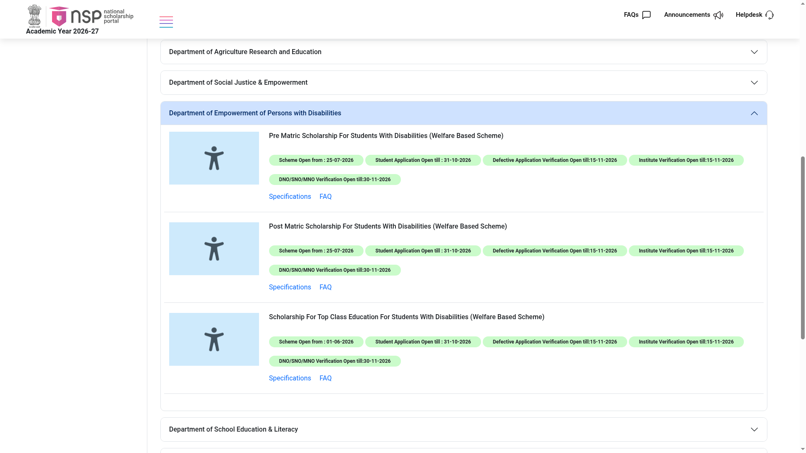
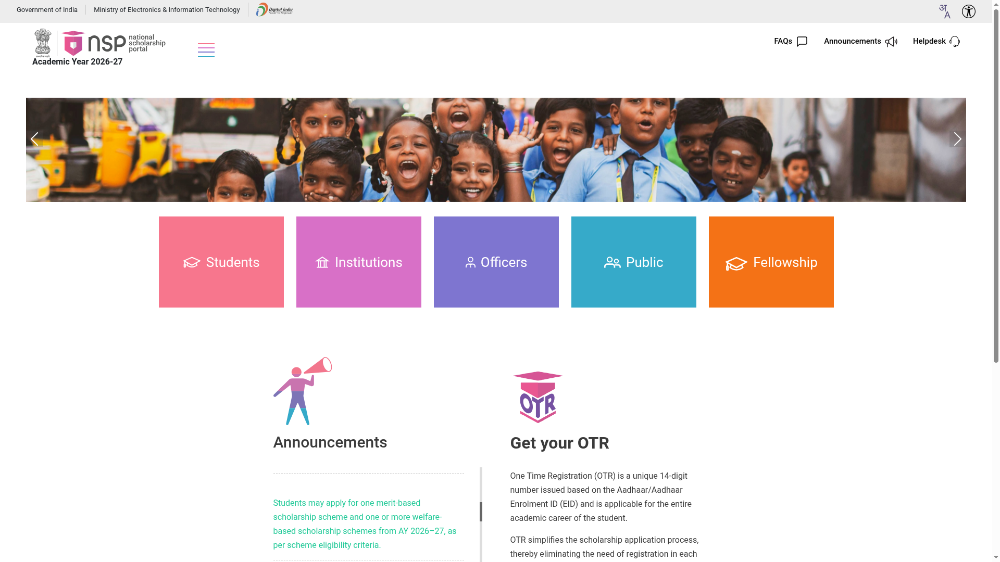

Pre-Matric Scholarship for Students with Disabilities 2026-27: apply on NSP by 31 October
The Department of Empowerment of Persons with Disabilities is accepting applications for the Pre-Matric Scholarship for Students with Disabilities 2026-27 on the National Scholarship Portal. It supports students with 40% or more disability studying in classes 9 and 10, with a maintenance allowance of Rs 800 per month for hostellers and Rs 500 for day scholars, plus disability and book allowances. The last date for students to apply is 31 October 2026.
Who can apply
- Regular, full-time student studying in class IX or X in a Government school or a school recognised by the Government or a Central/State Board of Secondary Education
- Student with benchmark disability - 40% or more disability as defined in the Rights of Persons with Disabilities Act, 2016 - with a valid disability certificate and UDID card or UDID enrolment (apply at swavlambancard.gov.in if you do not have one)
- Aadhaar-based biometric authentication (AadhaarFaceRD app) during registration
- Parental income not more than Rs 2.5 lakh per year
- Indian national
What you get (from the official scheme guidelines)
- Maintenance allowance: Rs 800 per month for hostellers, Rs 500 per month for day scholars
- Disability allowance: Rs 4,000 per year for visual impairment or intellectual disabilities; Rs 2,000 per year for all other types of disabilities
- Book allowance: Rs 1,000 per year
Key dates (checked 20 October 2026)
- Scheme opened: 25 July 2026
- Student applications close: 31 October 2026
- Defective application verification and institute verification: 15 November 2026
- DNO/SNO/MNO verification: 30 November 2026
How to apply: step by step

- Keep documents ready: UDID card or disability certificate, Aadhaar, income certificate of parents, bank account seeded with Aadhaar for DBT, previous marksheet and school details.

- Complete OTR with Aadhaar face authentication using the AadhaarFaceRD app, then log in with your OTR number.
- Choose "Pre Matric Scholarship For Students With Disabilities" from the scheme list, fill the application form and upload the documents.
- Submit before 31 October 2026 and note your application ID. Your institute verifies by 15 November; if your application is marked defective, correct it before the same date.
- Track status on NSP. The scholarship is paid by Direct Benefit Transfer to the Aadhaar-seeded bank account.
Watch: apply step by step
- English: NSP Scholarship 2026-27 - How to Apply Online Step-by-Step - MahaConnectDigital, September 2026 (English captions verified). Covers the OTR and application flow shared by all NSP schemes.
- Malayalam: NSP OTR registration Malayalam - E-KERALAM ONLINE SERVICE, December 2025 (Malayalam captions verified), and OTR verification Malayalam - TECHIES, September 2025. These walk through the OTR registration step.
We could not find a reliable video made specifically for this Pre-Matric PwD scheme - the videos above cover the shared NSP OTR and apply flow, which is the same for this scheme. They are by independent creators, not the government - always cross-check with the official sources below. Details above are from the NSP All-Scholarships page and the Department's official scheme guidelines, checked 20 October 2026.
Sources: NSP All Scholarships - Pre Matric Scholarship For Students With Disabilities, Scheme of Scholarships for Students with Disabilities - official guidelines (DEPwD), UDID card portal. Checked 20 October 2026. Explainer by AiCoN - not a government publication.